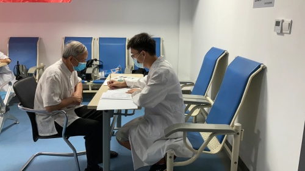

Cohort
The Hubei Memory & Aging Cohort Study (HMACS), was designed as a prospective study in Central China, to determine the prevalence, incidence, risk factors and biomarkers for dementia and mild cognitive impairment (MCI) among urban and rural older adults.
